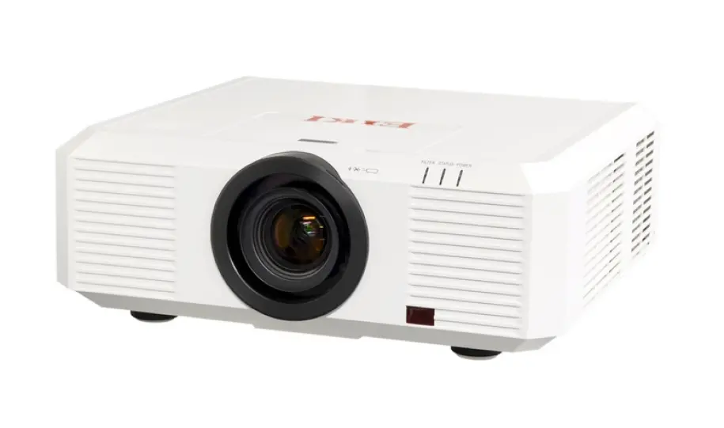

Проекторы для образования и бизнеса
Серия доступных проекторов Eiki для использования в классных комнатах, кабинетах, переговорных комнатах и залах для совещаний. Достаточно компактные, чтобы легко переносить их из помещения в помещение при необходимости, но при этом достаточно мощные, чтобы вывести на экран яркие обучающие материалы или обеспечить высокую четкость текста презентаций даже при включенном освещении. Небольшой вес и мгновенное подключение облегчают установку проектора и начало воспроизведения. Набор сменных объективов и коррекция искажений позволяют легко адаптировать проектор Eiki к любому помещению. А благодаря стильному дизайну проектор выглядит естественно вне зависимости от того, закреплен он на стене или потолке, или просто стоит на столе.